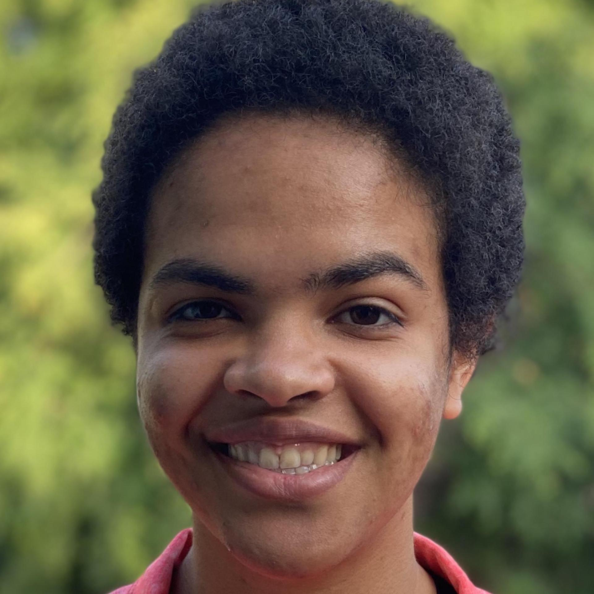

Course Staff
The best way to contact the staff is by making a post on the Ed Forum. If you need to contact the course staff via email, we can be reached at eecs182-fa22@berkeley.edu. You may contact the professors or GSIs directly, but the staff alias will produce the fastest response. All emails end with berkeley.eduNote: Please do not email logistics questions to the professor or GSIs. Please direct these questions to Ed or eecs182-fa22@.
Instructor
Anant Sahai
Office hours: after lecture (Tue/Thu 11am-12pm) in Cory 258
Email: sahai@eecs.Teaching Assistants

Saagar Sanghavi
Head TAEmail: ssanghavi404@
Kumar Krishna Agrawal
Email: kagrawal@- I am a PhD candidate in EECS. I am broadly interested in empirics, theory that improves our understanding of learning algorithms in interactive, uncertain environments; and translates to building efficient, scalable real-world systems. Outside work I indulge in astrophotography, running.

Olivia Watkins
Email: oliviawatkins@- Hi! I'm a grad student interested in human-in-the-loop teaching for RL (among other areas). In my spare time I play Quidditch, hang out with friends, and make mediocre puns.
Suhong Moon
Email: suhong.moon@- I’m a PhD student interested in representation learning.
Sheng Shen
Email: sheng.s@- I'm a PhD student focusing on vision-language and efficient NLP.
Jerome Quenum
Email: jquenum@- I'm an EE PhD student whose research interests include Signal Processing, Machine Learning, and Computer Vision. I am affiliated with the Berkeley Artificial Intelligence Research (BAIR) Lab and advised by Prof. Zakhor.
Tutors
Anrui Gu
Email: anruigu@- I'm a 4th year CS major. Deep learning is the main reason I switched from Econ to engineering, so feel free to reach out to chat about my journey and yours, especially for those with nontraditional backgrounds. Fun fact: I am solar-powered, punny, and like to karaoke German musicals.

Matthew Lacayo
Email: mattlacayo@- Hi everyone! I'm Matthew and I like to play Disney's Toontown Online and Wizard 101. I'm trying to break these destructive habits by making new ones like reading, chess, making youtube videos, playing club penguin + webkinz, and table tennis. I am very excited to work with you all this semester :)

Bryan Wu
Email: bryanwu@- Bioe+EECS Senior. Like climate science and public transit things. Think ML is cool. Gradient descent go brrrrrrrr. Hmu anytime!
Danny Reidenbach
Email: dreidenbach@- I am a current Masters student advised by Dan Klein. I leverage deep learning for small molecule generation and optimization.
Kevin Li
Email: yutengli@- Hey I'm Kevin, a 4th year EECS major from Taiwan! My research experience lies mostly in computer vision. I enjoy playing basketball, workout, traveling, and exploring food with friends. My goal this year is to train a model that finds guitar chords just by listening to songs (hmu if you know how to do this)!
Shivam Singhal
Email: shivamsinghal@- Hi there! My name is Shivam, and I am a fourth-year EECS major from the Bay Area. I am fascinated by the interactions between machines and humans. In my free time, I love watching comedy, political dramas, and mysteries, and I enjoy biking around town. Looking forward to meeting y'all! :)
Jake Austin
Email: jake-austin@- I'm a senior focusing primarily on computer vision. I enjoy running, making pizzas, surfing, views of the bay, and cozy rainy days.